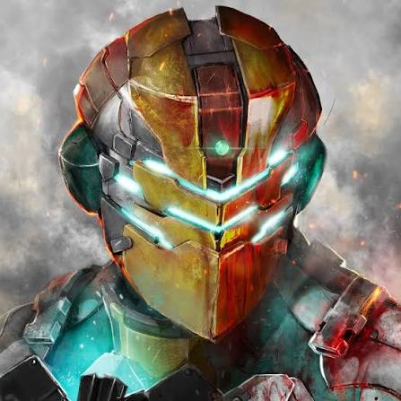

The masterminds behind the best heists, mods, and Los Santos adventures on YouTube.
TheRadBrad is legendary for his comprehensive, high-energy walkthroughs of blockbuster video games. His iconic playthrough of GTA V's single-player story mode captured millions of views, making him a go-to creator for fans experiencing Los Santos for the first time.

GTA Series Videos is the ultimate source for everything related to Rockstar Games. Known for their precise guides, hidden easter eggs, detailed lore explorations, and comprehensive updates on GTA Online, they are an essential channel for any hardcore fan.
VanossGaming and his friends turned GTA Online custom game modes, hilarious stunts, and ridiculous prop hunts into a global comedy phenomenon. Their highly edited, fast-paced funny moments videos defined an entire era of multiplayer gaming content.